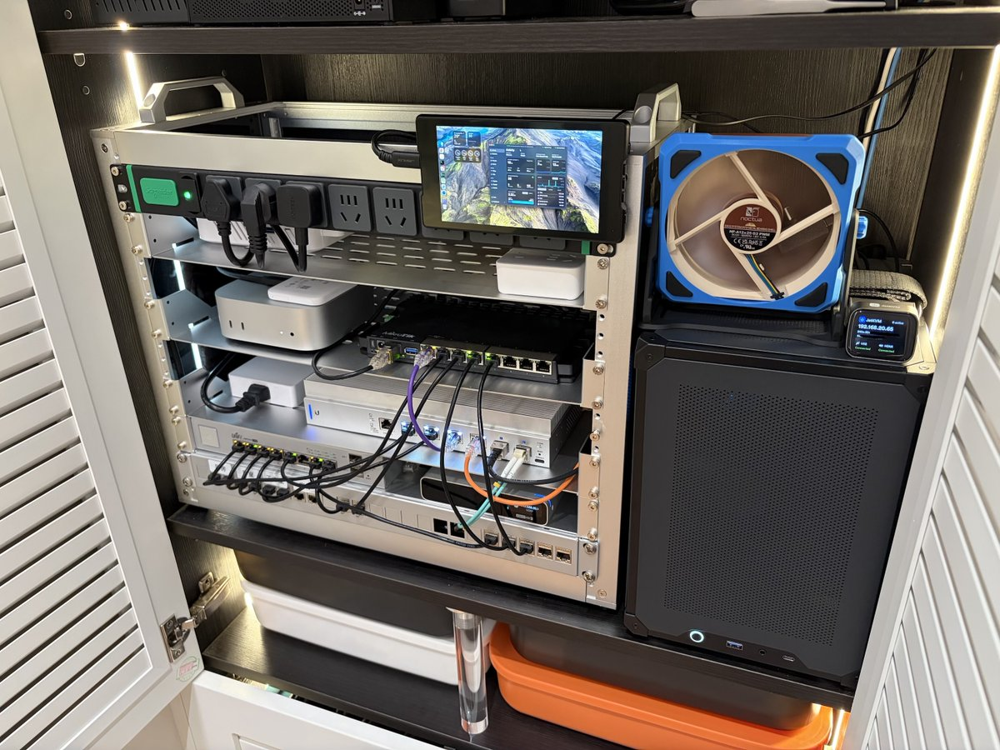

奶昔🥤
@realNyarime
@Blankwonder UniFi好评，不过家里的入户箱是怎么改成小HomeLab机柜的，空间有点极限会不会有积热

Yachen Liu
@Blankwonder
小机柜折腾完毕，分享一点经验
1. 今天电信师傅来更换了 2000M 套餐的光猫。各家运营商的 2000M 光猫大多都是子母猫设计，而且厂家一般默认母猫放在弱电箱里，所以通常只有子猫带 2.5G 网口。好在这次电信师傅提前预判了我的需求，专门申请了一套母猫带 2.5G https://t.co/gH8IfXgPlR